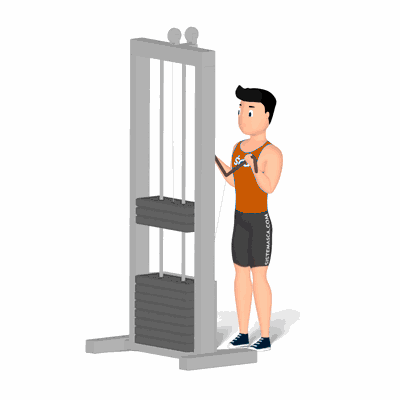

Rosca Corda no Cross Over

Exercício para fortalecimento e hipertrofia dos bíceps, com enfoque aos músculos bíceps braquiais e coracobraquial. Indicado a praticante de musculação nível intermediário e avançado.
Ficha Técnica
Tipo: Musculação
Grupo Muscular: Bíceps
Aparelho: Nenhum
Músculos: Nenhum
Como realizar
- Na posição em pé, no aparelho Cross Over, em distância que permita estender completamente os braços;
- Cabeça e Costas alinhadas, joelhos semiflexionados, pés ligeiramente separados;
- Braços estendidos, pegue a corda com as mãos em pegada supinada;
- Realize a flexão dos cotovelos contraindo os músculos do bíceps, trazendo os punhos em direção aos ombros de forma simultânea;
- Retorne à posição inicial lentamente e repita os movimentos.
 RC STORE
RC STORE